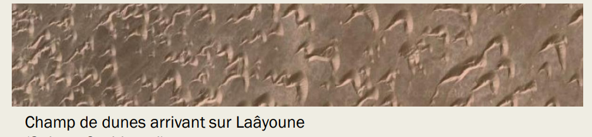

Pour conclure, nous avons, inspiré par les recherches déjà faites à ce sujet, développé deux modèles pour étudier les dunes : une expérience à petite échelle et une simulation informatique qui nous ont permis de reproduire avec succès les observations faites pour les dunes réelles. Dans un objectif de prévention de l’ensablement, un objectif principal dans le futur serait d’étudier les intéractions entre les dunes. En effet, comme l’on peut le voir sur cette image de dunes à Nouakchott ci-dessous, les dunes se forment dans des champs et pour véritablement comprendre la dynamique des barkhanes, il faut développer des modèles qui prennent en compte ces observations. C’est ce que nous avons essayé de mettre en place à un moment dans notre montage mais qui s’est avéré trop difficile.
 Retour Sommaire Vers les annexes